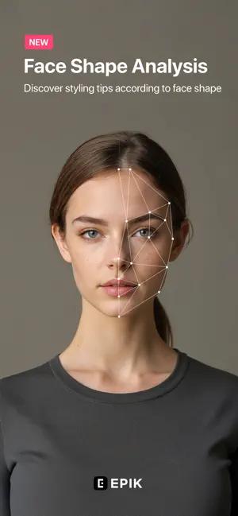

epik 六年迭代：一款修图 App 如何在「一键美型」和「精细控制」之间反复横跳
从早期一键式美颜工具到如今同时拥有专业调色面板和 AI 毕业照服务，epik 的版本迭代史藏着一个修图产品最真实的两难。
现在的 epik 正在改一些看起来很细碎的东西。
去它的官网翻了一下 v7.4.x 系列的更新日志，Face Size 瘦脸时的背景变形减轻了，Body 终于能在群组照里单独调整某一个人而不是整幅一起动，Reshape 的 Background Lock 干净了不少——这些改动单拎出来每个都不是「大功能」，甚至用户不仔细对比可能都察觉不到。但把它们放在一起看，能勾勒出一件事：epik 的团队一直在跟一个问题死磕——AI 把人修好看了，但周围的东西总会跟着遭殃。
这大概就是我观察 epik 这么久最强烈的感受：它的每一次版本迭代，本质上都是在「一键美型」和「精细控制」这两个方向之间找那个微妙的平衡点。而这个平衡，它找了快六年还没完全找着。
从一键到专业：那条看不见的分界线
样本文档没有给出 epik 的起始版本号，最早能看到的锚点是 v6.5.21——但从当前功能结构反推，epik 大概经历了三次比较清晰的定位转向。
第一次转向是从纯 AI 一键到 AI + 手动精修的混合模式。从下载数据看，早期的修图 App 很容易陷入一个误区：AI 越强越好，一键搞定一切。但 epik 没有停在这里，它后来加了一整套专业调色面板——Curves、HSL、Split Tone、Selective，这些本来是 Lightroom 用户才会碰的东西。为什么？因为一键美型解决不了一个根本问题：用户想要的不是「看起来好看」，而是「看起来像自己，只是更好看」。AI 一键把整张脸磨成塑料感，用户用一次新鲜两次就烦了。
AI Skin 这个工具的设计思路就是这个转向最典型的产物。市面上大多数磨皮工具的逻辑是「把皮肤区域统一模糊」，不管是瑕疵还是正常纹理一锅端。epik 的 AI Skin 反着来：先识别出哪些是瑕疵（痘印、斑点、泛红），哪些是正常皮肤纹理（毛孔、细纹），只改前者不动后者。磨完的皮肤干净但不假，不会出现那种「橡皮膏脸」。这个细节看起来小，但背后代表的是整个产品思路的变化——从「AI 替你决定什么是好看」变成「AI 帮你把你想要的效果做得更干净」。

第二次转向是从「修图工具」到「修图工具链」。v7.4.x 之前的版本，epik 的功能是散的：AI Skin 归 AI Skin，Reshape 归 Reshape，Looks 一键美型是独立入口。后来开始打通——你可以先跑 Enhance 提清晰度，再跑 AI Skin 磨皮，再进 Reshape 调整脸型，最后用 Curves 调色调，整个流程串成了一条链。更关键的是 Batch 批量编辑——你先手动把一张照片调到满意，这套参数可以一键套到同场景的其他照片上。这个功能 PRO 订阅才能用，但确实戳中了旅行党、活动摄影师、电商卖家的刚需：同一批照片光线差不多，一张张调太费时间，调好一张批量套效率翻十倍。
第三次转向是从「工具」到「服务」。AI Yearbook 这个功能是 epik 跟其他修图 App 最大的不同——它不是一个装在手机里的 AI 模型，而是一个按次付费的云端服务。用户上传自拍素材，选套餐（Standard 24 小时、Express 2 小时），等云端生成六组风格化的毕业照。这个功能的量级跟它之前做的所有修图工具都不在一个维度——之前都是本地处理几秒钟出结果，AI Yearbook 需要排队、需要服务器资源、需要处理用户投诉「成片不像自己」。翻了epik文档，里面甚至专门有一节讲「失败重试指南」：超时怎么办、成片不像怎么办、某组场景有合成瑕疵怎么办、付款后找不到订单怎么办——这些问题在本地工具里根本不存在。
迭代节奏里藏着的优先级
把 v6.5.21 和 v7.4.x 放在一起对比，能看出 epik 团队迭代时的优先级排序。
他们一直在死磕的两件事：AI 修图的自然度，和手动控制的精细度。Face Size 减小瘦脸时的背景变形、Reshape 的 Background Lock 更干净、Body 支持群组照单独调某一个人、眼袋功能可以应用到画面任意区域——这四个 v7.4.x 的更新，前三个都是「AI 修图时周围东西不要跟着变」，第四个是「手动控制的范围更大了」。完全对应之前说的两个核心方向。
他们一直没怎么动的：基础滤镜体系。样本文档里提到基础滤镜是免费版功能，但没有任何一个版本更新提过滤镜库的扩充或者滤镜效果的调整。对于一个修图 App 来说这有点反常——大多数同类产品每隔几个版本就会加新滤镜蹭热点。epik 反而在这块很克制，说明团队认为滤镜不是自己的核心竞争力，或者说，他们觉得 AI 工具链和专业调色面板已经足够覆盖滤镜能解决的问题。
还有一个值得注意的点：付费策略的分层。AI Yearbook 按次付费，AI 高级功能和模板素材要 PRO 订阅，基础修图功能免费。这个分层其实很聪明——按次付费降低了用户尝试门槛（不想订阅的人也能花几块钱玩一次 AI 毕业照），PRO 订阅抓住了高频用户的深度需求，免费版留住了偶尔修修图的轻度用户。但反过来看，这个分层也导致了一个问题：免费版和付费版之间的边界在哪里，有时候用户会觉得模糊。

这条路会通向哪里
从迭代规律推，epik 下一步大概率还是会在「自然度」和「精细度」这两条线上继续磨。
自然度方面，Reshape 现在有了 Background Lock，但还只是锁定背景不跟着变形——前景的物体呢？比如手搭在肩膀上，Reshape 瘦脸的时候手会不会跟着变？如果 Background Lock 能细化到只锁某一个区域、或者只锁非人体的部分，那 AI 修图的假感还能再降一个档次。还有 AI 抠图，Smart Cutout 目前的效果应该还能更准，特别是处理头发丝这种边缘复杂的区域。
精细度方面，批量编辑现在能批量套 Curves、HSL 这些参数，但 AI Skin、Enhance 这些 AI 功能批量套的时候每张照片还是各自跑一遍 AI，处理时间等于单张时间乘以数量。如果能让 AI 先识别出一批照片的光线和色调分布，自动给每张做一个微调偏移，而不是直接套同一套数值——那批量编辑的效果会比现在好很多。
还有一个我觉得 epik 可能会碰但还没碰的方向：多模态融合。现在 AI Yearbook 是上传自拍生成毕业照，Looks 是一键美型，AI Skin 是磨皮——这些 AI 功能之间基本是独立的。如果能让 AI 理解「这张照片我想要什么效果」，然后自动组合调用多个工具，比如「这张旅行照把我瘦一点、背景不要变、天空调蓝一点、皮肤磨干净」，一次描述搞定，那就是从「工具链」到「智能助理」的跨越了。
不过这些都是从迭代规律推的猜测，不当官方口径。epik 六年下来变了很多，但有一件事没变——它从来没有在「一键美型」和「精细控制」之间选过边，而是一直在往中间走。这条路可能走得慢，但对于用户来说，能在一个 App 里同时有一键的效率和手动的灵活，本身就是一种价值。